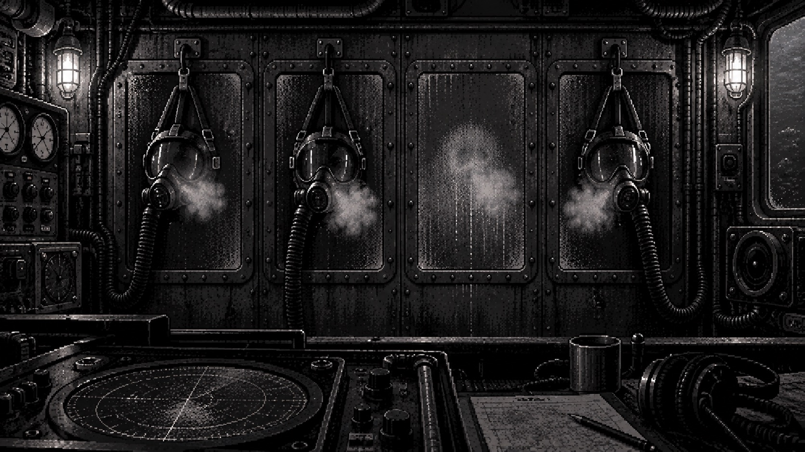

ABYSSAL ARCHIVE / 開発中の試作版
深淵異常調査船
乗員は三人。記録された呼吸は、四人分。
同じ場所を、違う条件で測る。観測記録を比べ、自分で立てた推理を実際の怪異へ試す。対処した後にも、まだ確かめたいことが残っている。
「四人目の呼吸」をプレイする →無料・インストール不要／PCブラウザ推奨／ホラー表現あり

観測して、比べる
集音位置や協力者の配置を変え、現象の違いから法則を考えます。
推理を、実際に試す
呼びかけ、隔離、回収。準備した条件で対処し、結果を測り直します。
何を持ち帰るか決める
調査を続けるか、現場を離れるか。残した状態と得た応答で結末が変わります。
現在遊べる範囲
ゲーム性を磨くため、現在は「四人目の呼吸」一件を収録しています。法則と初期条件は固定ですが、対処と撤収時の状態で結末が分岐します。ランダムな装備や複数の怪異を巡る仕組みは今後の開発対象です。
操作時に自動保存されます。続きは同じブラウザで再開できます。開発中のため、今後の更新でセーブの互換性が変わる場合があります。
試作版を遊ぶ →